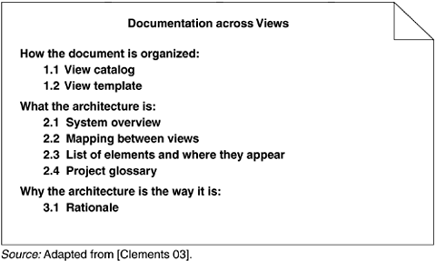

| [ Team LiB ] |
|
9.5 Documentation across ViewsWe now turn to the complement of view documentation, which is capturing the information that applies to more than one view or to the documentation package as a whole. Cross-view documentation consists of just three major aspects, which we can summarize as how-what-why:
Figure 9.3 summarizes these points. Figure 9.3. Summary of cross-view documentation HOW THE DOCUMENTATION IS ORGANIZED TO SERVE A STAKEHOLDEREvery suite of architectural documentation needs an introductory piece to explain its organization to a novice stakeholder and to help that stakeholder access the information he or she she is most interested in. There are two kinds of "how" information:
View CatalogA view catalog is the reader's introduction to the views that the architect has chosen to include in the suite of documentation. When using the documentation suite as a basis for communication, it is necessary for a new reader to determine where particular information can be found. A catalog contains this information. When using the documentation suite as a basis for analysis, it is necessary to know which views contain the information necessary for a particular analysis. In a performance analysis, for example, resource consumption is an important piece of information, A catalog enables the analyst to determine which views contain properties relevant to resource consumption. There is one entry in the view catalog for each view given in the documentation suite. Each entry should give the following:
The view catalog is intended to describe the documentation suite, not the system being documented. Specifics of the system belong in the individual views, not in the view catalog. For instance, the actual elements contained in a view are listed in the view's element catalog. View TemplateA view template is the standard organization for a view. Figure 9.1 and the material surrounding it provide a basis for a view template by defining the standard parts of a view document and the contents and rules for each. The purpose of a view template is that of any standard organization: It helps a reader navigate quickly to a section of interest, and it helps a writer organize the information and establish criteria for knowing how much work is left to do. WHAT THE ARCHITECTURE ISThis section provides information about the system whose architecure is being documented, the relation of the views to each other, and an index of architectural elements. System OverviewThis is a short prose description of what the system's function is, who its users are, and any important background or constraints. The intent is to provide readers with a consistent mental model of the system and its purpose. Sometimes the project at large will have a system overview, in which case this section of the architectural documentation simply points to that. Mapping between ViewsSince all of the views of an architecture describe the same system, it stands to reason that any two views will have much in common. Helping a reader of the documentation understand the relationships among views will give him a powerful insight into how the architecture works as a unified conceptual whole. Being clear about the relationship by providing mappings between views is the key to increased understanding and decreased confusion. For instance, each module may map to multiple runtime elements, such as when classes map to objects. Complications arise when the mappings are not one to one, or when runtime elements of the system do not exist as code elements at all, such as when they are imported at runtime or incorporated at build or load time. These are relatively simple one- (or none-) to-many mappings. In general, though, parts of elements in one view can map to parts of elements in another view. It is not necessary to provide mappings between every pair of views. Choose the ones that provide the most insight. Element ListThe element list is simply an index of all of the elements that appear in any of the views, along with a pointer to where each one is defined. This will help stakeholders look up items of interest quickly. Project GlossaryThe glossary lists and defines terms unique to the system that have special meaning. A list of acronyms, and the meaning of each, will also be appreciated by stakeholders. If an appropriate glossary already exists, a pointer to it will suffice here. WHY THE ARCHITECTURE IS THE WAY IT IS: RATIONALESimilar in purpose to the rationale for a view or the rationale for an interface design, cross-view rationale explains how the overall architecture is in fact a solution to its requirements. One might use the rationale to explain
In general, the rationale explains why a decision was made and what the implications are in changing it. |
| [ Team LiB ] |
|